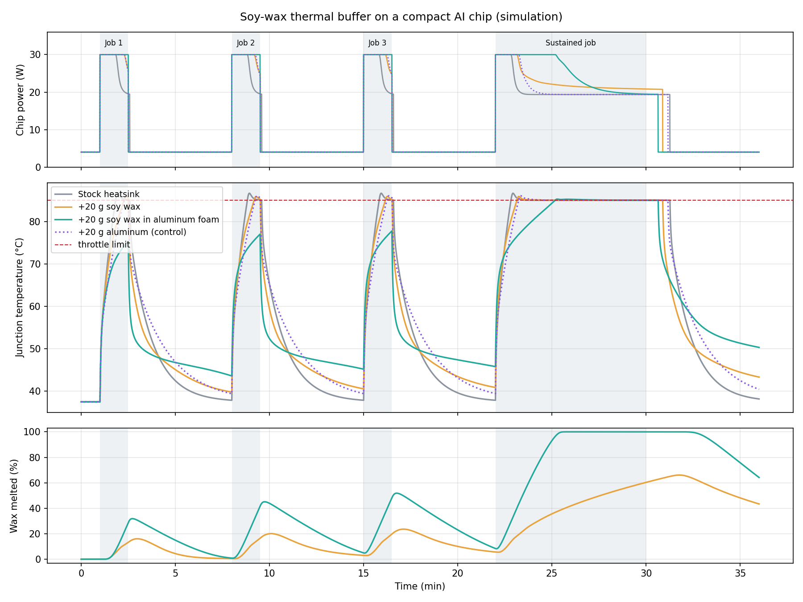

0 s
of throttling with soy wax cast into aluminum foam, against 131 s for the stock heatsink, over three 90-second AI jobs.
Simulation prototype
Soy wax melts at about 49 °C. Next to a small AI chip's heatsink, it can soak up heat during a burst of work and give it back to the fan while the chip idles. This prototype simulates that idea to find where it helps and where it doesn't.
Narrated demo, 2:28. In the video, "Al foam" means aluminum foam (Al is the chemical symbol). It is a physics model, not a lab measurement.
0 s
of throttling with soy wax cast into aluminum foam, against 131 s for the stock heatsink, over three 90-second AI jobs.
3:16
at full speed in an 8-minute job, against 0:52 for the stock heatsink. After that, every build throttles to the same ~19 W.
47 s
of throttling with a pure 9 mm wax slab. Adding the same 20 g as plain aluminum gave 40 s.
~110 J/g
of heat stored by soy wax as it melts, about half of commercial paraffin phase-change materials (~200 J/g).
Same chip, same fan, same workload: three 90-second AI jobs seven minutes apart, then an 8-minute job. Only the buffer on the heatsink changes. Build D is a control that adds the same mass as plain aluminum.
| Build | Peak chip temperature 3 short jobs | Time throttled 3 short jobs | Time at full speed 8-minute job |
|---|---|---|---|
| A · Stock heatsink | 86.7 °C | 131 s | 0:52 |
| B · +20 g soy wax slab | 85.9 °C | 47 s | 1:11 |
| C · +20 g soy wax in aluminum foam | 77.8 °C | 0 s | 3:16 |
| D · +20 g plain aluminum (control) | 86.0 °C | 40 s | 1:16 |

Aluminum foam is a metal sponge: a web of thin aluminum struts that is about 90 % open space. Melted wax poured into it fills the pores. The metal web then carries heat deep into the wax.
That matters because wax on its own conducts heat about as poorly as solid plastic (~0.17 W/m·K). In published tests, wax-filled aluminum foam conducts 3–7 W/m·K while still being mostly wax. The model uses 3 W/m·K, the low end.
Next step: a bench rig with a heater, thermocouples and the same fan, run with and without the wax pack.
git clone https://github.com/AarushAgarwal-dev/soywax-thermal-buffer
cd soywax-thermal-buffer
pip install numpy matplotlib edge-tts
python soywax_sim.py # results table and out/summary.png
python make_demo_video.py # narrated video (needs ffmpeg)Try other scenarios with flags such as --wax-g 40, --t-amb 35 or --k-foam 5.
Can soy wax smooth out heat spikes in compact AI hardware? This simulation compares three builds of a small AI chip with a fan heatsink: the stock heatsink, the same heatsink with 20 grams of soy wax, and that wax cast into aluminum foam. Each build runs three short AI jobs, then a long one.
Each card on the left is one build. At idle, all three sit near 37 degrees Celsius, and the wax is solid.
Job one arrives, and the chip jumps from 4 to 30 watts.
The stock heatsink hits the 85 degree limit, so the chip throttles, cutting its clock speed.
Both wax packs are now melting near 49 degrees, soaking up heat. In aluminum foam, the wax holds the chip at or below 76 degrees.
Between jobs, the wax re-solidifies and hands its heat to the fan, so the wax builds start each new job 2 to 8 degrees warmer.
Job two. The plain wax pack helps much less. Wax conducts heat poorly, so only the first 1.8 millimeters of its 9 millimeter slab melts.
Job three. Across all three short jobs, the foam build never throttles, while the stock heatsink throttles for about 44 seconds of every 90.
Now, an 8 minute job at full load.
The stock heatsink throttles after 52 seconds, and the plain wax build after 71 seconds.
After 3 minutes and 16 seconds, the foam pack is fully melted. The buffer is spent, so this build throttles too.
From here, it settles to the same 19 watts as the stock heatsink. Wax buys time, but adds no sustained cooling.
Re-solidifying after a long job is slow. 5 minutes later, the foam pack is still 64 percent molten.
The scorecard. Over the three short jobs, the stock heatsink throttled for 131 seconds. Plain wax cut that to 47, no better than the same weight of plain aluminum. The foam build never throttled, and peaked 9 degrees cooler. So: match the melting point to your hardware, keep all the wax within about 2 millimeters of metal, and expect it to buy minutes, not extra cooling. The next step is a bench test.